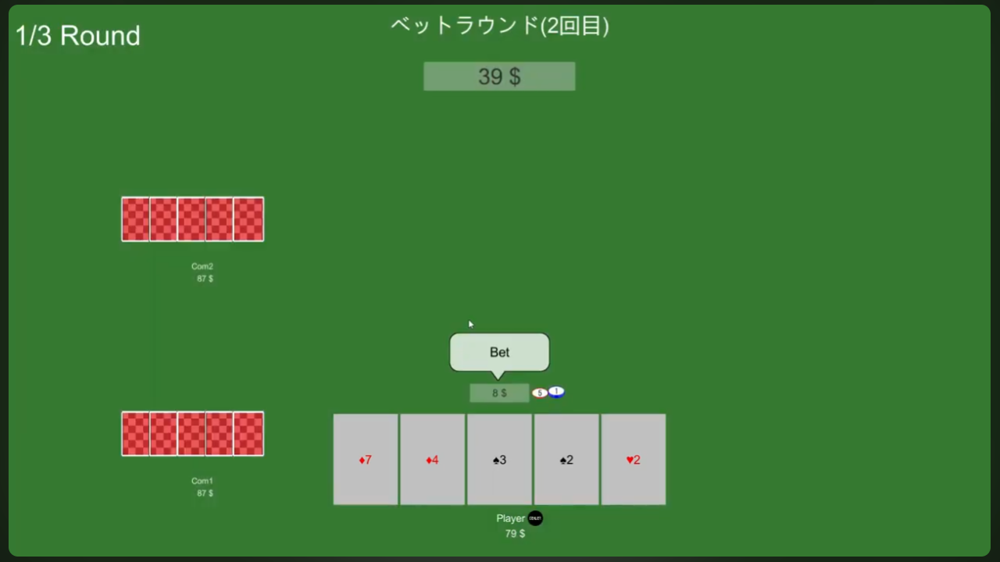
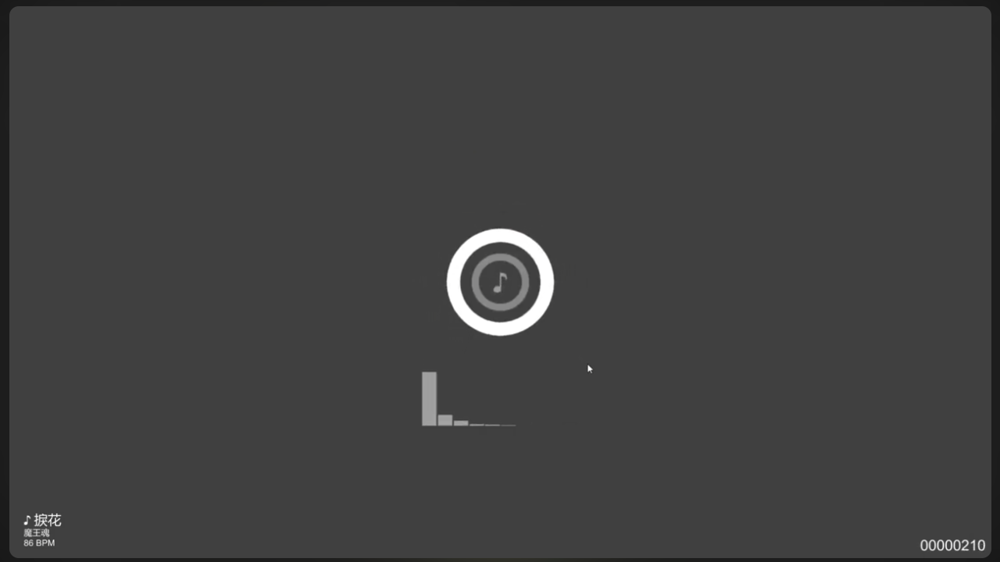
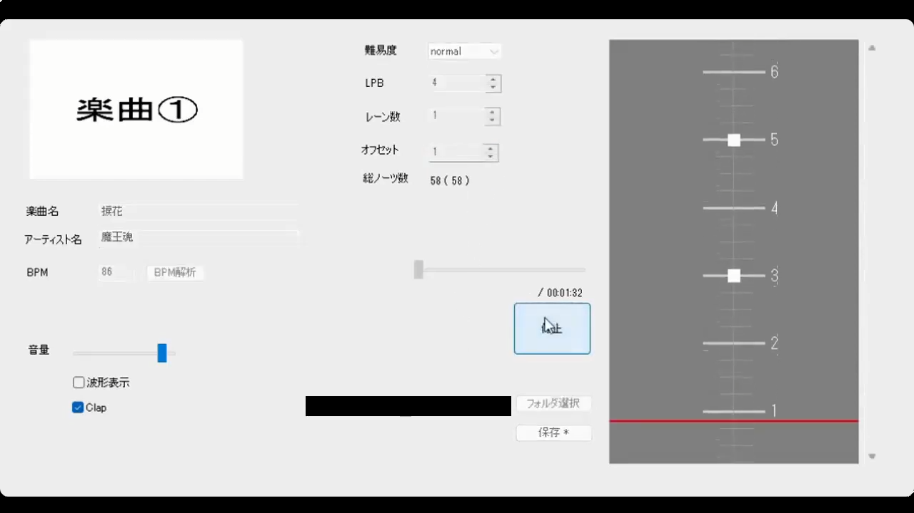

名前: Miyamoto Takayuki
屋号: アーダーシステム
| スキル名 | 習得度 |
|---|---|
| C# | ★★★★★★☆☆☆☆ |
| C++ | ★★★☆☆☆☆☆☆☆ |
| Excel VBA | ★★★★☆☆☆☆☆☆ |
| PHP | ★☆☆☆☆☆☆☆☆☆ |
| Java | ★☆☆☆☆☆☆☆☆☆ |
| Objective-C | ★☆☆☆☆☆☆☆☆☆ |
| スキル名 | 習得度 |
|---|---|
| Unity | ★★★★★★☆☆☆☆ |
| Visual Studio | ★★★☆☆☆☆☆☆☆ |
| Visual Studio Code | ★★★☆☆☆☆☆☆☆ |
| Xcode | ★☆☆☆☆☆☆☆☆☆ |
| Eclipse | ★☆☆☆☆☆☆☆☆☆ |
| Git | ★★★★☆☆☆☆☆☆ |
| SourceTree | ★★☆☆☆☆☆☆☆☆ |
| XAMPP | ★★☆☆☆☆☆☆☆☆ |
| Redmine | ★★☆☆☆☆☆☆☆☆ |
| Backlog | ★☆☆☆☆☆☆☆☆☆ |
| Slack | ★☆☆☆☆☆☆☆☆☆ |
| BrightAuthor | ★☆☆☆☆☆☆☆☆☆ |
| DIO | ★★☆☆☆☆☆☆☆☆ |
| Microsoft Word | ★★★★★☆☆☆☆☆ |
| Microsoft Excel | ★★★★★☆☆☆☆☆ |
| スキル名 | 習得度 |
|---|---|
| UniRx | ★★★☆☆☆☆☆☆☆ |
| UniTask | ★★★★★☆☆☆☆☆ |
| DOTween (HOTween v2) | ★★★★☆☆☆☆☆☆ |
| Youtube Video Player | ★★★☆☆☆☆☆☆☆ |
| AVPro Video - Core Windows Edition | ★★★☆☆☆☆☆☆☆ |
| RubyTextMeshPro | ★★★☆☆☆☆☆☆☆ |
| SteamVR Plugin | ★★★★☆☆☆☆☆☆ |
| Ultraleap Plugin for Unity | ★★★☆☆☆☆☆☆☆ |
| Gatebox SDK | ★☆☆☆☆☆☆☆☆☆ |
| Mirror | ★★☆☆☆☆☆☆☆☆ |
| Photon Cloud | ★☆☆☆☆☆☆☆☆☆ |
| WebRTC Video Chat | ★☆☆☆☆☆☆☆☆☆ |
| ニフクラ mobile backend Unity SDK | ★★☆☆☆☆☆☆☆☆ |
| LINE SDK for Unity | ★☆☆☆☆☆☆☆☆☆ |
| スキル名 | 習得度 |
|---|---|
| NAudio | ★★☆☆☆☆☆☆☆☆ |
| スキル名 | 習得度 |
|---|---|
| DirectX | ★★☆☆☆☆☆☆☆☆ |
| OpenGL | ★★☆☆☆☆☆☆☆☆ |
| Boost | ★★★☆☆☆☆☆☆☆ |
| Ogg Vorbis | ★★★☆☆☆☆☆☆☆ |
| 資格名 | 取得日 |
|---|---|
| マルチメディア検定 ベーシック | 2007年08月 |
| 初級システムアドミニストレータ | 2007年08月 |
| 基本情報技術者 | 2008年11月 |
| UMLモデリング技能認定 L1 | 2014年06月 |
| PHP5技術者認定 初級 | 2014年11月 |
| CGクリエイター検定 エキスパート | 2016年08月 |
| CGエンジニア検定 ベーシック | 2016年12月 |
| VBAエキスパート スタンダード | 2021年02月 |
|
迷路探索 |

ポーカー |

リズムゲーム |
|

ノーツエディタ |
こちら から。